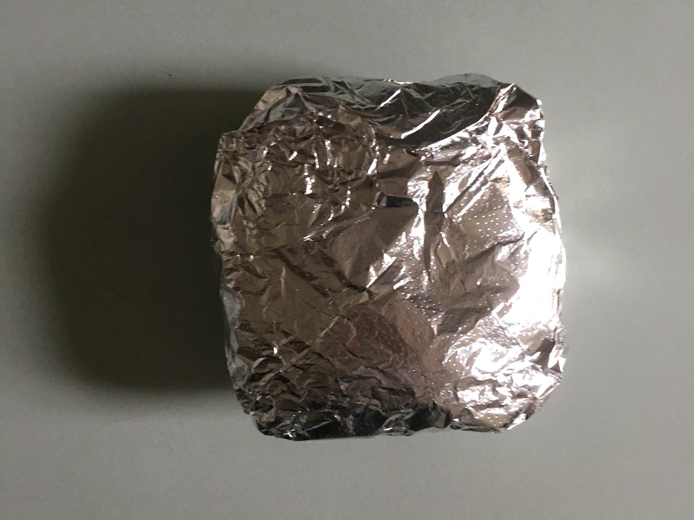

carefully curated opinions about the best (and worst) bars, restaurants, hotels, recipes, art and design across the world
Case Study
The Perfect Breakfast: an in depth look at the Bacon, Egg and Cheese sandwich

The bacon, egg and cheese sandwich, a NYC classic, might just be the best breakfast in the world.
Ahh, the humble bacon, egg and cheese (BEC for the kids that love the acronyms). I am constantly perplexed as to how this is not a “thing” anywhere else in the world.Like dancing at a punk rock show... there’s no right way to do it but there is certainly a wrong way.
So simple. Just 4 rules.
1. Eggs any style. (I mean... except poached. But that goes without saying. What kind of monster are you?)I prefer over medium so the eggs are a little runny and you don’t embarrass yourself at your desk at work, on the subway, or wherever you choose to eat it (I chose Madison Square Park)
2. Bacon. “American bacon”...“real bacon”. Pork belly. cured. sliced. cooked on a flat top
3. Cheese. American. (Or mild cheddar..Don’t give me any of this Gruyere or Muenster)
4. Hard roll (aka “Kaiser” roll. Quotes because it’s not really a German kaiser roll, just a New York bastardization… which as we know, New York bastards yield the best results.) Having eaten versions of the BEC around the world, and outside NYC, It’s this element that’s the MOST important. Hard on the outside with a hollow sounding ::thump:: when tapped. Preferably with poppy seeds. Pillowy soft white bread on the inside. Must be the water or something, because nowhere else seems to make it “right”. No other bread will do. Brioche for a hamburger, or potato roll but I’m sorry @shakeshack, not for this egg sandwich. @cloverclubny your BLT with egg and cheese on sourdough holds a very special place in my heart, but it’s not a bacon egg and cheese.
Perfect breakfast, fits in one hand.Where to get it: The “short” answer. Your nearest bodega. When Aussie bartender extraordinaire @lordharlen was in town, @kariface and I implored him, “whenever you wakeup, find your closest “corner bodega” (it doesn’t need to be on a corner, but it probably will be). Go in and order a bacon, egg and cheese. They’ll serve it to you their way, whichever way that is.If they say they don’t have it, the grill is off or it’s “after breakfast”, throw your hands in the air, mutter loudly “you gotta be f*cking kidding me” and walk out. That place is dead to you. Find the next bodega. It’ll only be a block or two away. Let us know how it is..”The verdict? Harlan exclaimed “Why was I spending $10 on avo toast at that place in Bed Stuy this whole time??? That was the best 3 dollars* I spend this trip! Killer brekkie ‘mate” (*in my head he said dollar-ey doos)
Specifically where to get it? in midtown east, sargesdeli BEC is spectacular (and is the one pictured above). Around since the mid-60’s, Sarge’s is open 24/7. A classic Jewish deli, and by classic I mean, doesn’t keep kosher so as to serve one of the best bacon egg and cheeses in the city. In the East Village, @veselkanyc. I know people will disagree, but it’s real good. Thick cut bacon and they butter the roll. Fallen heroes:RIP Robin Raj on the corner of 3rd ave and 14th. Yours was a gem. I had one every morning that summer I worked for the @wutangclan RIP Delion. What do NYU kids eat at Fresh and Co for breakfast？ (I’m assuming avocado toast. I’m assuming it costs $9. If you can afford $70K a year.. you enjoy that avocado toast!) What’s your favorite bacon egg and cheese in the city? Or, have you found a good one anywhere else in the world?
ニューヨークでこのサンドは有名です. 最高です。ベーコンと卵とチーズです。日本でなぜかわからないどこれがありません。日本人がベーコンが好きです。日本人がチーズが好きです。日本人が卵が大好きです。なぜありませんか？これを食べました? ニューヨークで？日本で？好き？コメントは書けるください


These are also worth your time


A global branding , design & consulting agency from NYC, in Tokyo. We're big in Australia.